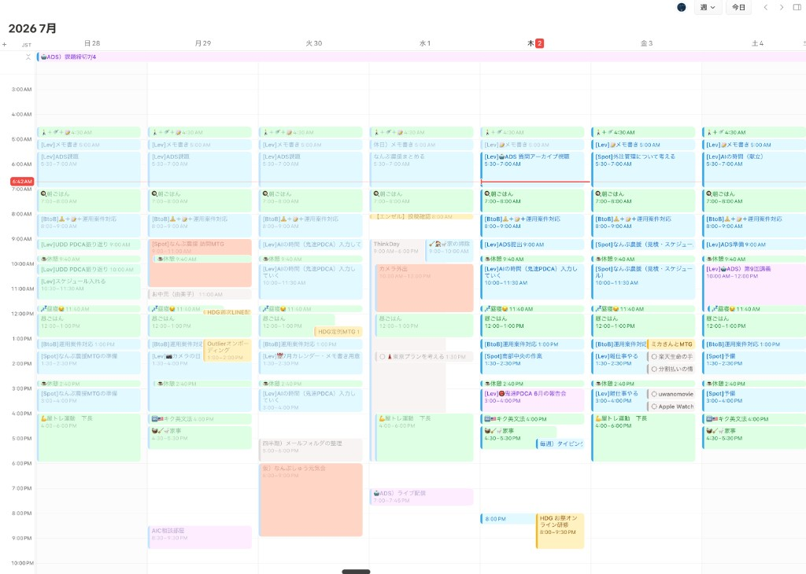
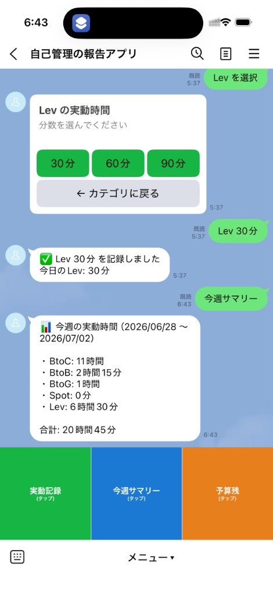
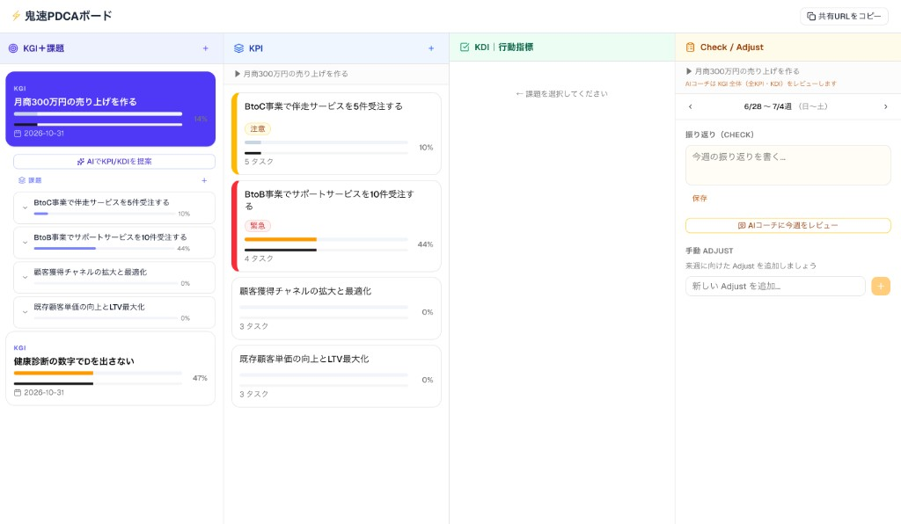

How — 3点セット
3つの画面で1週間を回す
それぞれ1役割だけ。混ぜないから続く。
PLAN
Google Calendar
課題外 → 運用で追加

計画 — 来週、何に何時間使う？
DO
LINE ジャーナル
2ヶ月目の課題を拡張

2タップ — カテゴリ → 30/60/90分（2ヶ月目の課題の UX）

集計 — 6/28〜 BtoC 11h / Lev 6.5h … 合計 20h45m
CHECK
鬼速PDCA
4ヶ月目の課題

振り返り — KGI→KDI＋Check/Adjust（4ヶ月目の課題の画面）